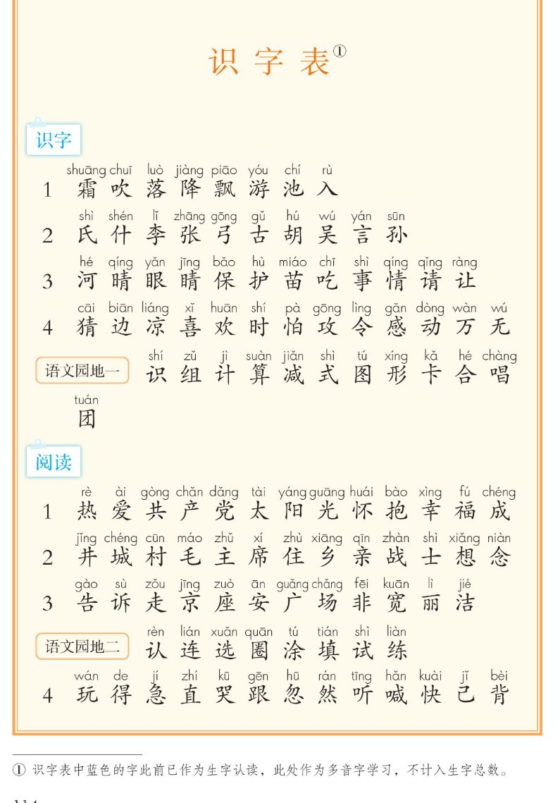
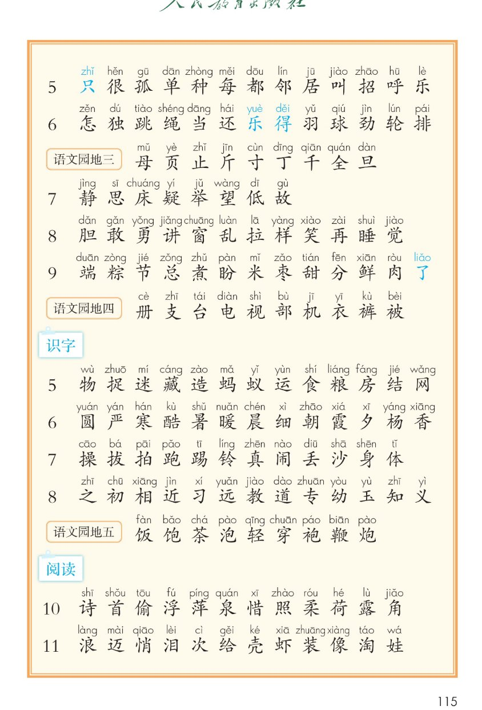
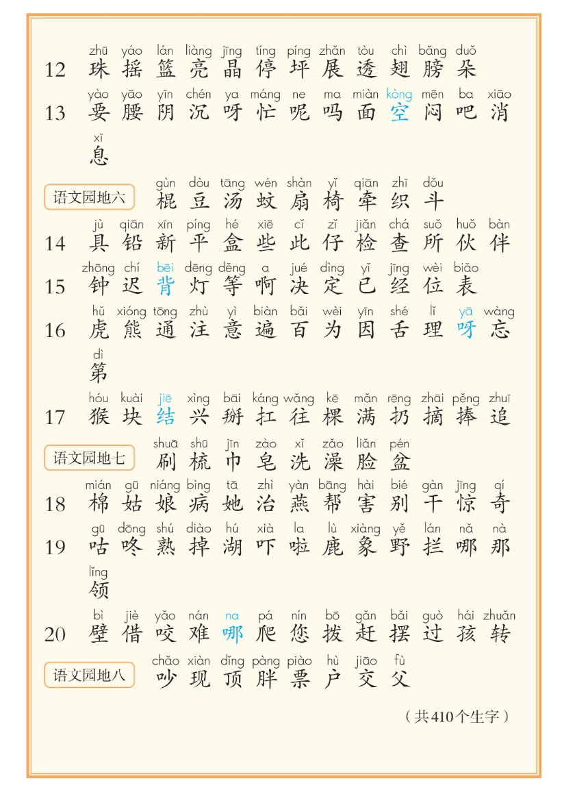

统编版 · 一年级下册 · 书末附页 · 课本第 114~116 页
识字表
课本第 114~116 页 · 36 行 · 419 字（含蓝色多音字 9 个，计入总数 410 个）
每个字听读两遍410 个生字9 个蓝色多音字逐行点读课本原页
这张表把全册要认的字按课与语文园地列出来。每个字点一次听读两遍；课本里印成蓝色的字是多音字，按注①不计入生字总数。先自己读，再点字听两遍对照，还可以藏起拼音试一试。
怎么用这张表 配套学习说明
本表学习要求（配套设计，非教材原文）：每个字或词点一次就听读两遍——先听第一遍，跟着读一遍，再听第二遍对照。点「读这一板块」或「整页连读」，也是逐字逐词连读两遍；点控制栏的「听读两遍」按钮可切换成只读一遍作对照；点「拼 拼音」把注音藏起来自己认。字上方的拼音照录课本，只作显示，不会读出来。
课本原文与蓝色多音字以教材为准；词语跟读为配套练习，供参考。
（共410个生字）
词语跟读 · 每词听读两遍 配套练习
词语照录本册课文中出现过的词（配套跟读练习）；点每个词同样听读两遍。
春风
夏雨
秋霜
冬雪
青草
红花
游鱼
飞鸟
河水
青蛙
保护
事情
太阳
北京
广场
快乐
识字表 · 第 114 页 课本第 114 页 逐行点读 · 每个字听读两遍
栏目：识字（课本小标签）
识字 18 字 · 点每个字听读两遍
霜
吹
落
降
飘
游
池
入
识字 210 字 · 点每个字听读两遍
氏
什
李
张
弓
古
胡
吴
言
孙
识字 312 字 · 点每个字听读两遍
河
晴
眼
睛
保
护
苗
吃
事
情
请
让
识字 413 字 · 点每个字听读两遍
猜
边
凉
喜
欢
时
怕
攻
令
感
动
万
无
语文园地一12 字 · 点每个字听读两遍
识
组
计
算
减
式
图
形
卡
合
唱
团
栏目：阅读（课本小标签）
阅读 113 字 · 点每个字听读两遍
热
爱
共
产
党
太
阳
光
怀
抱
幸
福
成
阅读 213 字 · 点每个字听读两遍
井
城
村
毛
主
席
住
乡
亲
战
士
想
念
阅读 312 字 · 点每个字听读两遍
告
诉
走
京
座
安
广
场
非
宽
丽
洁
语文园地二8 字 · 点每个字听读两遍
认
连
选
圈
涂
填
试
练
阅读 413 字 · 点每个字听读两遍
玩
得
急
直
哭
跟
忽
然
听
喊
快
已
背
识字表 · 第 115 页 课本第 115 页 逐行点读 · 每个字听读两遍
栏目：阅读（课本小标签）
阅读 513 字 · 点每个字听读两遍
只
很
孤
单
种
每
都
邻
居
叫
招
呼
乐
阅读 613 字 · 点每个字听读两遍
怎
独
跳
绳
当
还
乐
得
羽
球
劲
轮
排
语文园地三9 字 · 点每个字听读两遍
母
页
止
斤
寸
丁
千
全
旦
阅读 78 字 · 点每个字听读两遍
静
思
床
疑
举
望
低
故
阅读 812 字 · 点每个字听读两遍
胆
敢
勇
讲
窗
乱
拉
样
笑
再
睡
觉
阅读 913 字 · 点每个字听读两遍
端
粽
节
总
煮
盼
米
枣
甜
分
鲜
肉
了
语文园地四10 字 · 点每个字听读两遍
册
支
台
电
视
部
机
衣
裤
被
栏目：识字（课本小标签）
识字 513 字 · 点每个字听读两遍
物
捉
迷
藏
造
蚂
蚁
运
食
粮
房
结
网
识字 613 字 · 点每个字听读两遍
圆
严
寒
酷
暑
暖
晨
细
朝
霞
夕
杨
香
识字 712 字 · 点每个字听读两遍
操
拔
拍
跑
踢
铃
真
闹
丢
沙
身
体
识字 813 字 · 点每个字听读两遍
之
初
相
近
习
远
教
道
专
幼
玉
知
义
语文园地五9 字 · 点每个字听读两遍
饭
饱
茶
泡
轻
穿
袍
鞭
炮
栏目：阅读（课本小标签）
阅读 1012 字 · 点每个字听读两遍
诗
首
偷
浮
萍
泉
惜
照
柔
荷
露
角
阅读 1112 字 · 点每个字听读两遍
浪
迈
悄
泪
次
给
壳
虾
装
像
淘
娃
识字表 · 第 116 页 课本第 116 页 逐行点读 · 每个字听读两遍
阅读 1212 字 · 点每个字听读两遍
珠
摇
篮
亮
晶
停
坪
展
透
翅
膀
朵
阅读 1314 字 · 点每个字听读两遍
要
腰
阴
沉
呀
忙
呢
吗
面
空
闷
吧
消
息
语文园地六9 字 · 点每个字听读两遍
棍
豆
汤
蚊
扇
椅
牵
织
斗
阅读 1413 字 · 点每个字听读两遍
具
铅
新
平
盒
些
此
仔
检
查
所
伙
伴
阅读 1512 字 · 点每个字听读两遍
钟
迟
背
灯
等
啊
决
定
已
经
位
表
阅读 1614 字 · 点每个字听读两遍
虎
熊
通
注
意
遍
百
为
因
舌
理
呀
忘
第
阅读 1713 字 · 点每个字听读两遍
猴
块
结
兴
掰
扛
往
棵
满
扔
摘
捧
追
语文园地七8 字 · 点每个字听读两遍
刷
梳
巾
皂
洗
澡
脸
盆
阅读 1813 字 · 点每个字听读两遍
棉
姑
娘
病
她
治
燕
帮
害
别
干
惊
奇
阅读 1914 字 · 点每个字听读两遍
咕
咚
熟
掉
湖
吓
啦
鹿
象
野
拦
哪
那
领
阅读 2013 字 · 点每个字听读两遍
壁
借
咬
难
哪
爬
您
拔
赶
摆
过
孩
转
语文园地八8 字 · 点每个字听读两遍
吵
现
顶
胖
票
户
交
父
蓝色字 · 多音字 课本第 114~116 页 照录课本注①
① 识字表中蓝色的字此前已作为生字认读，此处作为多音字学习，不计入生字总数。
下面 9 个字在课本里印成蓝色，字卡也按课本标蓝；读音照录课本注音。
只
乐
得
了
空
背
呀
结
哪
课本原页 · 第 114~116 页
点图放大

课本第 114 页 · 识字表（识字 1~4 / 语文园地一 / 阅读 1~4 / 语文园地二）

课本第 115 页 · 识字表（阅读 5~11 / 语文园地三、四 / 识字 5~8 / 语文园地五）

课本第 116 页 · 识字表（阅读 12~20 / 语文园地六、七、八 / 共410个生字）
教材原页截图照录；页面上的分组标签、词语板块、听读两遍要求均为配套学习设计，
不冒充教材原文。蓝色字、注释与总字数照录课本。